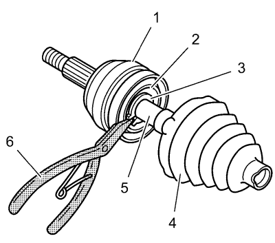
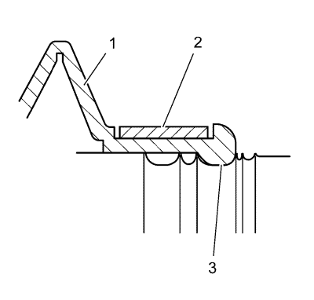
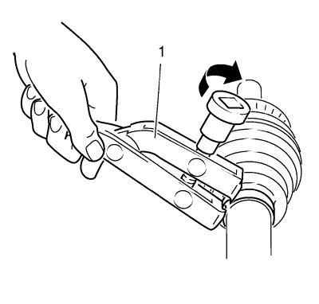
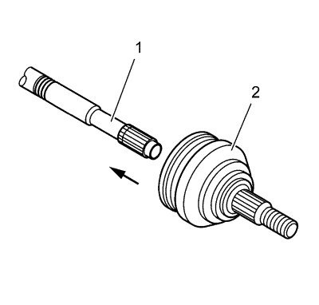
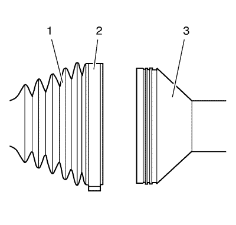

Sustitución del fuelle y la la articulación exterior del árbol impulsor de la rueda delantera
Herramientas especiales
| • | GE-396 Tenaza para anillos de seguridad |
| • | CH-804 Dispositivo tensor |
Si desea informarse sobre herramientas regionales equivalentes, consultar Herramientas especiales .
Procedimiento de desmontaje
- Retire el eje de accionamiento de la rueda izquierda o derecha. Véase Sustitución del árbol impulsor de la rueda delantera - Lado izquierdo o Sustitución del semieje de la rueda delantera - lado derecho .

- Desmonte de la articulación CV la abrazadera de retención de la junta grande con un cortador lateral. Deseche la abrazadera de retención de la junta.
Advertencia : Si fuera necesario, utilice gafas protectoras para evitar sufrir lesiones.
- Si existe un anillo de estampado pequeño, utilice una rectificadora manual para cortar el anillo, teniendo cuidado de no dañar la barra del semieje, para desmontar el anillo de estampado. Si no, desmonte la abrazadera de retención de la junta pequeña con un cortador lateral. Deseche la abrazadera de retención.
- Separe la junta exterior del semieje de la pista exterior de la articulación CV (1) en el diámetro grande.
- Deslice la junta (4), apartándola de la articulación a lo largo de la barra del semieje (5).
- Retire con un trapo la grasa de la superficie de la pista interior de la articulación CV (2).
- Extienda las orejetas del anillo de seguridad de la pista (3) con unas tenazas para anillos de seguridad GE-396 (6).
- Desmonte el conjunto de la articulación CV (1) de la barra del semieje (5).
- Desmonte la junta exterior de la barra de dirección (4) de la barra del semieje (5).
- Deseche la junta exterior vieja.
- Limpie los siguientes artículos completamente con un disolvente limpiador. Retire todos los residuos de grasa anterior y cualquier contaminante.
| • | Los conjuntos de pista interior y exterior |
| • | La jaula de la articulación CV |
| • | Las rótulas de aleación de cromo |
- Seque todas las piezas.
- Compruebe el conjunto de la articulación CV por si existiera lo siguiente:
- Limpie la barra del semieje. Utilice un cepillo de alambre para retirar óxido en la zona de montaje de la junta (ranuras).
Procedimiento de montaje

Nota: Coloque una toalla en el yunque antes de instalar el semieje.
- Monte el semieje en un yunque.
- Monte la nueva abrazadera con orejetas pequeñas (2) en el cuello de la junta exterior (1). No rebordear.
- Deslice la junta exterior (1) en la barra del semieje y coloque el cuello de la junta exterior (1) en la ranura de la junta en la barra del semieje. La ranura más grande bajo la ranura a la vista de la barra del semieje es la ranura de la junta (3).
Precaución: Consulte Precaución con las fijaciones en la sección Prólogo

- Rebordee la abrazadera de orejetas (1) utilizando el dispositivo tensor CH-804 (1) y una llave dinamométrica. Apriete la abrazadera de orejetas a 25 N·m 19 (lib. pie).
- Coloque aproximadamente la mitad de la grasa del juego de servicio en el interior de la junta exterior y coloque el resto de la grasa en la articulación CV del trípode.

- Empuje la articulación CV (2) en la barra del semieje (1) hasta que el anillo de seguridad esté asentado en la ranura de la barra del semieje.

Nota: La junta exterior (1) no debe estar mellada, dada de sí o deformada de ningún modo. Si la junta exterior (1) no tiene la forma correcta, ecualice la presión de la junta exterior (1) y dele la forma correcta a la junta de forma manual.
- Deslice el diámetro grande de la junta exterior (1) con la abrazadera de fijación de la junta grande (2) hacia su lugar por encima del exterior de la pista exterior de la articulación CV (3) y coloque el reborde de la junta en la ranura de la pista exterior de la articulación CV.
- Rebordee la abrazadera de retención de la junta (1) utilizando el dispositivo tensor CH-804 a 25 N·m 19 (lib. pie)
- Monte el eje de accionamiento de la rueda izquierda o derecha. Véase Sustitución del árbol impulsor de la rueda delantera - Lado izquierdo o Sustitución del semieje de la rueda delantera - lado derecho .
| © Copyright Chevrolet. All rights reserved |